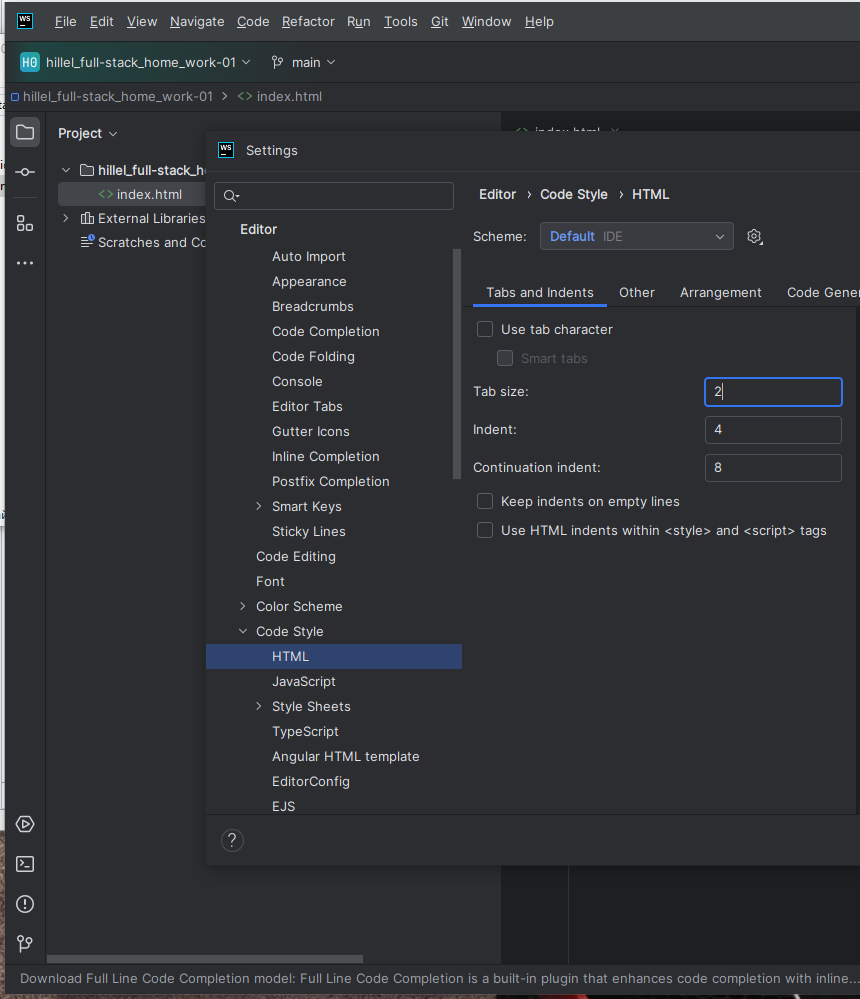

Зображення
==================================================================== Слава Україні!

Це тег параграфу: p
Параграф (з використанням болд). Теги: p, b
Параграф (з використанням італік). Теги: p, i
Ще Параграф (з використанням болд та італік). Теги: p, i, b
Попередньо форматований текст,
моноширним шрифтом та з усіма пробілами.
Тег: pre